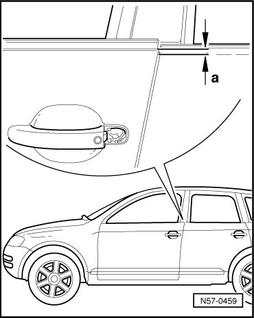

Door Adjustment
Front Door
Door Adjustment
For proper door adjustment, door hinge must be loosened at the pillar. Other measures, such as aligning the door upward, are not effective. Excess pressure thereafter will again cause the door to sag.
The door adjusting wrench (3320) using the box wrench (3320/2) must be used for this.
If it should be necessary that the door hinge at upper A-pillar must be loosened from inside, the socket insert (3320/1) can be used. To do so, instrument panel must be removed.
If a new outer door panel is to be installed, this is done without the subframe.
The rear edge of the outer door panel is installed about 2 mm, dimension - a -, higher than the rear door.

When the door subframe is installed, the door sinks these 2 mm.